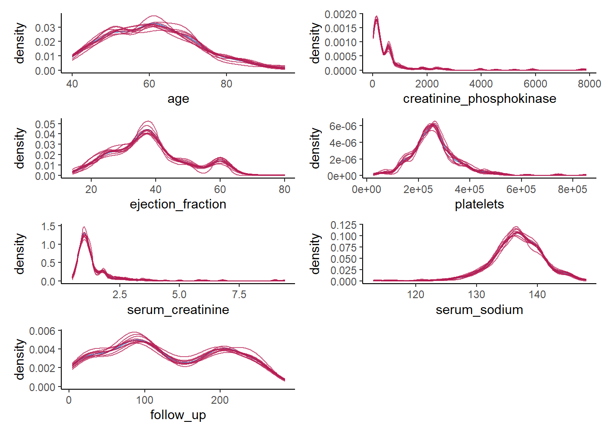

remotes::install_github("amices/mice")
remotes::install_github("amices/ggmice")
install.packages("ggplot2")
install.packages("patchwork")
install.packages("psych")
install.packages("purrr")Synthetic data in R: Generating synthetic data with high utility using mice
Introduction
In this workshop, you will learn how to create and evaluate synthetic data in R. In the practical, we will work with the R package mice (van Buuren and Groothuis-Oudshoorn 2011). mice was originally developed to impute missing data, but, as you will experience, can also be used to impute synthetic data (see Volker and Vink 2021). Other alternatives to create synthetic data are, for example, the R-package synthpop (Nowok, Raab, and Dibben 2016), or the stand-alone software IVEware (“IVEware: Imputation and Variance Estimation Software,” n.d.).
If you have R and R Studio installed on your device, you can follow all the steps from this practical using your local version of R Studio. In case you do not have an installation of R and R Studio, you can quickly create an account on R Studio Cloud, and work with a project that is set-up for this workshop (the link will follow). Note that you have the opportunity to work with your own data (you can also use data provided by us). If you are going to work via R Studio Cloud, you may not want to upload your own data to this server. In this case, you can still decide to work with the data provided by us. You could also install R and R Studio on the spot, but since we do not have infinite time, we advise to use R Studio Cloud if you have no access to R and R Studio on your device already.
In this workshop, you will (at least) use the packages mice (van Buuren and Groothuis-Oudshoorn 2011), ggmice (make sure to download the latest version from GitHub, Oberman 2022), magrittr (Bache and Wickham 2022) and psych (Revelle 2022). Make sure to load them (in case you haven’t installed them already, install them first, using install.packages("package.name")).
library(mice) # to create the synthetic data
library(ggmice) # to make visualizations of the synthetic data
library(ggplot2) # required when using ggmice
library(patchwork) # to stitch multiple figures together
library(psych) # to obtain descriptive statistics
library(purrr) # to work with multiply imputed synthetic datasetsAdditionally, make sure to set a seed, so that your results can be compared with our results.
set.seed(1)Data
For this workshop, we have prepared all exercises with the Heart failure clinical records data set. However, you may also choose to work with a data set of your own liking. All steps exercises and solutions that we outline here should be applicable to another data set as well, but some data processing might be required before our example code works as it should. In the worst case, you might run into errors that we could not foresee, but we are more than happy to think along and help you to solve these issues.
Heart failure clinical records
The Heart failure clinical records data set is a medical data set from the UCI Machine Learning Repository (click here for the source), originally collected by Ahmad (2017) from the Government College University, Faisalabad, Pakistan, and adapted and uploaded to the UCI MLR by Chicco and Jurman (2020). This data set contains medical information of 299 individuals on 13 variables, and is typically used to predict whether or not a patient will survive during the follow-up period, using several biomedical predictors.
If you decide to work with the Heart failure clinical records data and work in R Studio Cloud, you can access the environment related to this workshop here, including a script osf_synthetic.R that gets you started on installing and loading the required packages, and that imports the data for you. You can continue to work in this script. Make sure to save the project on your account, so that your changes are not deleted if you, for some reason, have to refresh the browser.
If you have R Studio installed on your own machine, you can download the cleaned version of the Heart failure clinical records data set from my GitHub and load it as heart_failure, by running the following line of code.
heart_failure <- readRDS(url("https://thomvolker.github.io/UMCUSynthetic/data/heart_failure.RDS"))The Heart failure clinical records data consists of the following variables:
age: Age in yearsanaemia: Whether the patient has a decrease of red blood cells (No/Yes)hypertension: Whether the patient has high blood pressure (No/Yes)creatinine_phosphokinase: Level of the creatinine phosphokinase enzyme in the blood (mcg/L)diabetes: Whether the patient has diabetes (No/Yes)ejection_fraction: Percentage of blood leaving the heart at each contractionplatelets: Platelets in de blood (kiloplatelets/mL)sex: Sex (Female/Male)serum_creatinine: Level of serum creatinine in the blood (mg/dL)serum_sodium: Level of serum sodium in the blood (mg/dL)smoking: Whether the patient smokes (No/Yes)follow_up: Follow-up period (days)deceased: Whether the patient decreased during the follow-up period
After loading the data, it is always wise to first inspect the data, so that you have an idea what to expect.
head(heart_failure)| age | anaemia | creatinine_phosphokinase | diabetes | ejection_fraction | platelets | serum_creatinine | serum_sodium | sex | smoking | hypertension | deceased | follow_up |
|---|---|---|---|---|---|---|---|---|---|---|---|---|
| 75 | No | 582 | No | 20 | 265000 | 1.9 | 130 | Male | No | Yes | Yes | 4 |
| 55 | No | 7861 | No | 38 | 263358 | 1.1 | 136 | Male | No | No | Yes | 6 |
| 65 | No | 146 | No | 20 | 162000 | 1.3 | 129 | Male | Yes | No | Yes | 7 |
| 50 | Yes | 111 | No | 20 | 210000 | 1.9 | 137 | Male | No | No | Yes | 7 |
| 65 | Yes | 160 | Yes | 20 | 327000 | 2.7 | 116 | Female | No | No | Yes | 8 |
| 90 | Yes | 47 | No | 40 | 204000 | 2.1 | 132 | Male | Yes | Yes | Yes | 8 |
Additionally, we can ask for a summary of all variables, or use describe() from the psych-package to provide descriptive statistics of all variables.
Note. Make sure to install psych if you haven’t done so in the past.
summary(heart_failure) age anaemia creatinine_phosphokinase diabetes ejection_fraction
Min. :40.00 No :170 Min. : 23.0 No :174 Min. :14.00
1st Qu.:51.00 Yes:129 1st Qu.: 116.5 Yes:125 1st Qu.:30.00
Median :60.00 Median : 250.0 Median :38.00
Mean :60.83 Mean : 581.8 Mean :38.08
3rd Qu.:70.00 3rd Qu.: 582.0 3rd Qu.:45.00
Max. :95.00 Max. :7861.0 Max. :80.00
platelets serum_creatinine serum_sodium sex smoking
Min. : 25100 Min. :0.500 Min. :113.0 Female:105 No :203
1st Qu.:212500 1st Qu.:0.900 1st Qu.:134.0 Male :194 Yes: 96
Median :262000 Median :1.100 Median :137.0
Mean :263358 Mean :1.394 Mean :136.6
3rd Qu.:303500 3rd Qu.:1.400 3rd Qu.:140.0
Max. :850000 Max. :9.400 Max. :148.0
hypertension deceased follow_up
No :194 No :203 Min. : 4.0
Yes:105 Yes: 96 1st Qu.: 73.0
Median :115.0
Mean :130.3
3rd Qu.:203.0
Max. :285.0 This gives a good impression about the measurement levels of all variables, as well as the range of the possible values each variable can have.
describe(heart_failure)| vars | n | mean | sd | median | trimmed | mad | min | max | range | skew | kurtosis | se | |
|---|---|---|---|---|---|---|---|---|---|---|---|---|---|
| age | 1 | 299 | 6.083389e+01 | 1.189481e+01 | 60.0 | 6.021715e+01 | 14.82600 | 40.0 | 95.0 | 55.0 | 0.4188266 | -0.2204793 | 0.6878946 |
| anaemia* | 2 | 299 | 1.431438e+00 | 4.961073e-01 | 1.0 | 1.414938e+00 | 0.00000 | 1.0 | 2.0 | 1.0 | 0.2754750 | -1.9305367 | 0.0286906 |
| creatinine_phosphokinase | 3 | 299 | 5.818395e+02 | 9.702879e+02 | 250.0 | 3.654938e+02 | 269.83320 | 23.0 | 7861.0 | 7838.0 | 4.4184296 | 24.5254138 | 56.1131970 |
| diabetes* | 4 | 299 | 1.418060e+00 | 4.940671e-01 | 1.0 | 1.398340e+00 | 0.00000 | 1.0 | 2.0 | 1.0 | 0.3305857 | -1.8970241 | 0.0285726 |
| ejection_fraction | 5 | 299 | 3.808361e+01 | 1.183484e+01 | 38.0 | 3.742739e+01 | 11.86080 | 14.0 | 80.0 | 66.0 | 0.5498228 | 0.0005484 | 0.6844265 |
| platelets | 6 | 299 | 2.633580e+05 | 9.780424e+04 | 262000.0 | 2.567301e+05 | 65234.40000 | 25100.0 | 850000.0 | 824900.0 | 1.4476814 | 6.0252322 | 5656.1650591 |
| serum_creatinine | 7 | 299 | 1.393880e+00 | 1.034510e+00 | 1.1 | 1.189295e+00 | 0.29652 | 0.5 | 9.4 | 8.9 | 4.4113866 | 25.1888415 | 0.0598273 |
| serum_sodium | 8 | 299 | 1.366254e+02 | 4.412477e+00 | 137.0 | 1.368216e+02 | 4.44780 | 113.0 | 148.0 | 35.0 | -1.0376430 | 3.9841899 | 0.2551802 |
| sex* | 9 | 299 | 1.648829e+00 | 4.781364e-01 | 2.0 | 1.684647e+00 | 0.00000 | 1.0 | 2.0 | 1.0 | -0.6204576 | -1.6204183 | 0.0276513 |
| smoking* | 10 | 299 | 1.321070e+00 | 4.676704e-01 | 1.0 | 1.278008e+00 | 0.00000 | 1.0 | 2.0 | 1.0 | 0.7626368 | -1.4231112 | 0.0270461 |
| hypertension* | 11 | 299 | 1.351171e+00 | 4.781364e-01 | 1.0 | 1.315353e+00 | 0.00000 | 1.0 | 2.0 | 1.0 | 0.6204576 | -1.6204183 | 0.0276513 |
| deceased* | 12 | 299 | 1.321070e+00 | 4.676704e-01 | 1.0 | 1.278008e+00 | 0.00000 | 1.0 | 2.0 | 1.0 | 0.7626368 | -1.4231112 | 0.0270461 |
| follow_up | 13 | 299 | 1.302609e+02 | 7.761421e+01 | 115.0 | 1.292780e+02 | 105.26460 | 4.0 | 285.0 | 281.0 | 0.1265232 | -1.2238150 | 4.4885455 |
The describe() function gives more distributional information about all variables.
Loading your own data
In case you brought your own data, you can load it into R using a function that matches your data format. Below, you can find several functions that might be helpful if you want to load the your data into R. You can use these functions both locally, or on R Studio Cloud, but make sure to install the required package first.
| Programme | Format | Command |
|---|---|---|
| Excel | .csv | readxl::read_xlsx("path_to_file/data_name.xlsx") |
| Excel | .xlsx | readr::read_csv("path_to_file/data_name.csv") |
| SPSS | .sav | haven::read_sav("path_to_file/data_name.sav") |
| Stata | .dta | haven::read_dta("path_to_file/data_name.dta") |
After loading in your own data, make sure that the variables in your data are coded accordingly (this can go wrong when transferring between data types). That is, make sure that your categorical variables are coded as factors and your numeric variables as numeric variables. To do so, you can make use of the following code. Note, however, that this is not a workshop on data wrangling: if importing your data into R creates a mess, it might be better to use the Heart failure clinical records data, so that you can spend your valuable time on creating synthetic data.
data_name$variable <- as.numeric(data_name$variable)
data_name$variable2 <- factor(data_name$variable,
levels = values, # values of the data
labels = value_labels) # labels of these valuesIf your data has the correct format, we can proceed to the next steps. Given that you are using your own data, we assume that you have (at least some) knowledge about the variables in your data. We will therefore skip the steps to obtain some descriptive information of the variables in your data, and continue to creating and evaluating synthetic data.
In the sequel, we will outline how to create and evaluate synthetic data using the Heart failure clinical records data, but most of these steps should be directly applicable to your own data. In case something gives an error, do not hesitate to ask how the problem can be solved!
Creating synthetic data
Broadly speaking, two methods for creating synthetic data can be distinguished. The first one is based on parametric imputation models, which assumes that the structure of the data is fixed, and draws synthetic values from a pre-specified probability distribution. That is, after estimating a statistical model, the synthetic data are generated from a probability distribution, without making any further use of the observed data. In general, this procedure is less likely to result in an accidental release of disclosive information. However, these parametric methods are often less capable of capturing the complex nature of real-world data sets.
The subtleties of real-world data are often better reproduced with non-parametric imputation models. Using this approach, a non-parametric model is estimated, resulting in a donor pool out of which a single observation per observation and per variable is drawn. These models thus reuse the observed data to serve as synthetic data. Accordingly, much of the values that were in the observed data end up in the synthetic data. However, these observed data are generally combined in unique ways, it is generally not possible to link this information to the original respondents. The non-parametric procedures often yield better inferences, while still being able to prevent disclosure risk (although more research into measures to qualify the remaining risks is required). Therefore, this practical will showcase how to generate synthetic data using one such non-parametric method: classification and regression trees [CART; Breiman et al. (1984)].
Now you have a feeling of what the data looks like, we will use these two different ways to create synthetic data: a fully parametric approach, in which the data are synthesized using either linear or logistic regression, and a fully non-parametric approach, in which we synthesize all data using CART.
In general, mice proceeds as follows: from first to the last column in your data set, the given variable is synthesized based on all other variables in the data. Specifically, a model is trained on the observed data, and new values for variable \(X_j\) are imputed on the basis of all other variables \(X_{-j}\). This procedure is repeated sequentially, until all variables are synthesized. In this way, the relationships between the variables are generally preserved.
However, before we can use mice to generate synthetic data, we have to take care of some issues, because mice was not initially developed to create synthetic data. Specifically, we have to do two things: specify which values we want to overimpute and specify which method we want to use for the imputations.
1. Create a matrix of the same dimensions as the original data called where, specifying all cells as the logical operator TRUE.
Hint: You can use the mice function make.where().
where <- make.where(heart_failure, "all")2. Create a vector of length 13 called method, indicating which (parametric) method to use to synthesize each variable.
Hint: You can use make.method() to create an initial vector with imputation methods, and replace each cell with "pmm" with "norm".
method <- make.method(heart_failure, where = where)
method[method == "pmm"] <- "norm"Now we have specified which values ought to be synthetic, and which method to use to create the synthetic values, we can actually create the synthetic data.
3. Use mice() to create m = 10 synthetic data sets in an object called syn_param, using the previously specified method vector and where-matrix.
Hint: When creating synthetic data, a single iteration is sufficient when there is no missing data, so we can set maxit = 1.
syn_param <- mice(heart_failure,
m = 10,
maxit = 1,
method = method,
where = where,
printFlag = FALSE)Creating the synthetic data is a piece of cake. However, after creating the synthetic data, we must assess its quality in terms of data utility and disclosure risk. Quality control is conveniently performed using visual methods, and can be done using the package ggmice (Oberman 2022).
The quality of synthetic data sets can be assessed on multiple levels and in multiple different ways. Starting on a univariate level, the distributions of the synthetic data sets can be compared with the distribution of the observed data. For the continuous variables, this can be done by comparing the densities of the synthetic data sets with the observed data sets.
4. To get an idea of whether creating the synthetic data went accordingly, compare the 10 rows of the fourth synthetic data set with the first 10 rows of the original data.
Hint: You can use complete(syn_param, 4) to extract the fourth synthetic data set from the syn_param object.
complete(syn_param, 4) |>
head(10)
heart_failure |>
head(10)| age | anaemia | creatinine_phosphokinase | diabetes | ejection_fraction | platelets | serum_creatinine | serum_sodium | sex | smoking | hypertension | deceased | follow_up |
|---|---|---|---|---|---|---|---|---|---|---|---|---|
| 70.92261 | No | 366.6747 | Yes | 42.92144 | 204390.89 | 2.7152725 | 131.6446 | Male | Yes | No | Yes | 179.48829 |
| 48.30249 | No | 2046.3943 | No | 30.70660 | 408473.87 | 2.5798796 | 138.4602 | Male | Yes | No | Yes | 98.19146 |
| 86.10533 | No | -302.6695 | No | 37.89212 | 206278.40 | -0.1570883 | 127.3648 | Male | Yes | No | Yes | 153.21827 |
| 57.91638 | No | 1661.3744 | No | 49.71085 | 332615.90 | 0.1345579 | 139.6346 | Male | No | No | Yes | 81.52507 |
| 50.55972 | Yes | -1011.7901 | Yes | 27.34550 | 305225.88 | 3.3017948 | 131.5210 | Female | No | No | Yes | 167.43579 |
| 55.83006 | No | -216.3143 | No | 39.51518 | 295136.63 | 0.9162642 | 136.9804 | Male | No | No | Yes | 26.48984 |
| 54.29551 | Yes | 737.2774 | Yes | 32.83620 | 359939.84 | 1.1211233 | 136.3835 | Male | No | Yes | Yes | 43.93452 |
| 73.11211 | No | 1514.7399 | Yes | 40.19810 | 57423.31 | 2.0694278 | 137.8042 | Male | No | No | No | 48.08214 |
| 87.08193 | Yes | 2748.6788 | No | 27.68107 | 350128.93 | 2.2497322 | 137.3318 | Female | No | No | Yes | 95.18380 |
| 81.42981 | No | 945.2391 | No | 38.98448 | 279901.98 | 0.5998120 | 131.2643 | Male | Yes | Yes | Yes | -26.28810 |
| age | anaemia | creatinine_phosphokinase | diabetes | ejection_fraction | platelets | serum_creatinine | serum_sodium | sex | smoking | hypertension | deceased | follow_up |
|---|---|---|---|---|---|---|---|---|---|---|---|---|
| 75 | No | 582 | No | 20 | 265000 | 1.9 | 130 | Male | No | Yes | Yes | 4 |
| 55 | No | 7861 | No | 38 | 263358 | 1.1 | 136 | Male | No | No | Yes | 6 |
| 65 | No | 146 | No | 20 | 162000 | 1.3 | 129 | Male | Yes | No | Yes | 7 |
| 50 | Yes | 111 | No | 20 | 210000 | 1.9 | 137 | Male | No | No | Yes | 7 |
| 65 | Yes | 160 | Yes | 20 | 327000 | 2.7 | 116 | Female | No | No | Yes | 8 |
| 90 | Yes | 47 | No | 40 | 204000 | 2.1 | 132 | Male | Yes | Yes | Yes | 8 |
| 75 | Yes | 246 | No | 15 | 127000 | 1.2 | 137 | Male | No | No | Yes | 10 |
| 60 | Yes | 315 | Yes | 60 | 454000 | 1.1 | 131 | Male | Yes | No | Yes | 10 |
| 65 | No | 157 | No | 65 | 263358 | 1.5 | 138 | Female | No | No | Yes | 10 |
| 80 | Yes | 123 | No | 35 | 388000 | 9.4 | 133 | Male | Yes | Yes | Yes | 10 |
The first thing we can notice, is that the continuous variables are not rounded, as in the original data, which is logical, because we draw these values from a normal distribution. Apart from that, there are negative values in the synthetic version of the variable creatinine_phosphokinase, while the original data is strictly positive. We will come to these issues at a later moment.
Apart from inspecting the data itself, we can assess distributional similarity between the observed and synthetic data. For simplicity, we will first focus on the sixth synthetic data set.
5. Compare the descriptive statistics from the sixth synthetic data set with the descriptive statistics from the observed data.
Hint: Use the function describe() from the psych package to do this.
complete(syn_param, 6) |>
describe()
heart_failure |>
describe()The descriptive statistics are not exactly similar, but come rather close in terms of mean and standard deviation. When looking at higher-order moments and the minimum and maximum, we see that there are some noticeable differences. We pay more attention to these issues when we visually inspect the synthetic data.
6. Create a bar plot using geom_bar() for each categorical variable in the data, mapping these variables to the x-axis with one bar per category per imputed data set.
Hint 1: Within ggmice, set mapping = aes(x = VARIABLE, group = .imp), and within geom_bar(), set mapping = aes(y = ..prop..) and position = position_dodge() to make sure the bars are comparable.
Hint 2: You can map over all categorical variables by creating a vector with the column names of all categorical variables, and using purrr::map() in combination with aes_string() and patchwork::wrap_plots().
colnames(heart_failure)[sapply(heart_failure, is.factor)] %>%
map(~ ggmice(syn_param, mapping = aes_string(.x, group = '.imp')) +
geom_bar(mapping = aes(y = ..prop..),
position = position_dodge2(),
fill = "transparent",
show.legend = FALSE)) %>%
patchwork::wrap_plots()For the categorical variables, we seem to be doing a good job in recreating the data on a univariate level.
Now we do the same for the continuous variables, but rather than creating a bar chart, we create a density plot.
7. Create a density plot for each continuous variable with ggmice(), mapping these variables to the x-axis, using the function geom_density(), and make sure that each imputed set obtains its own density.
Hint: The code ggmice(syn, mapping = aes(x = VARIABLE, group = .imp)) creates a ggmice object per imputed set.
colnames(heart_failure)[sapply(heart_failure, is.numeric)] %>%
map(~ ggmice(data = syn_param,
mapping = aes_string(x = .x, group = '.imp')) +
geom_density(show.legend = F)) %>%
wrap_plots(ncol = 2)
Again, we see what we observed previously as well. For some of the continuous variables, we do a poor job in recreating a univariate distribution that is similar to the distribution of the observed variables. This gives a clear indication that something is wrong with our synthesis model.
Of course, this could have been expected, since some of the variables are highly skewed, while we impose a normal distribution on each variable. It is quite likely that we could have done a better job by using more elaborate data manipulation (e.g., transforming variables such that there distribution corresponds more closely to a normal distribution (and back-transforming afterwards)).
For now, we will try a different approach, namely a non-parametric one.
8. Use mice() to create m = 10 synthetic data sets in an object called syn_cart, using the previously specified where-matrix, but now use "cart" as the imputation method.
syn_cart <- mice(heart_failure,
m = 10,
maxit = 1,
method = "cart",
where = where,
printFlag = FALSE)For now, we will skip looking at the synthetic data, and continue directly to a the visual inspection of the newly created synthetic data, using the previous visualizations as before.
9. Create a bar plot using geom_bar() for each categorical variable in the data, mapping these variables to the x-axis with one bar per category per imputed data set.
colnames(heart_failure)[sapply(heart_failure, is.factor)] %>%
map(~ ggmice(syn_cart, mapping = aes_string(.x, group = '.imp')) +
geom_bar(mapping = aes(y = ..prop..),
position = position_dodge2(),
fill = "transparent",
show.legend = FALSE)) %>%
patchwork::wrap_plots()For the categorical variables, we again seem to be doing fine: all proportions are comparable across observed and synthetic data.
Again, we do the same for the continuous variables, using a density plot.
10. Create a density plot for each continuous variable with ggmice(), mapping these variables to the x-axis, using the function geom_density(), and make sure that each imputed set obtains its own density. Compare these plots to the previous figures, what do you notice?
colnames(heart_failure)[sapply(heart_failure, is.numeric)] %>%
map(~ ggmice(data = syn_cart,
mapping = aes_string(x = .x, group = '.imp')) +
geom_density(show.legend = F)) %>%
wrap_plots(ncol = 2)
We do a much better job than we did before. The synthetic data seems to closely follow the distribution of the observed data, and all irregularities in the observed data are pretty much recreated in the synthetic data, which is what we hope to see.
References
Ahmad, Assia AND Bhatti, Tanvir AND Munir. 2017. “Survival Analysis of Heart Failure Patients: A Case Study.” PLOS ONE 12 (7): 1–8. https://doi.org/10.1371/journal.pone.0181001.
Bache, Stefan Milton, and Hadley Wickham. 2022. Magrittr: A Forward-Pipe Operator for r. https://CRAN.R-project.org/package=magrittr.
Breiman, Leo, Jerome Friedman, Charles J Stone, and Richard A Olshen. 1984. Classification and Regression Trees. New York: CRC press. https://doi.org/10.1201/9781315139470.
Chicco, Davide, and Giuseppe Jurman. 2020. “Machine Learning Can Predict Survival of Patients with Heart Failure from Serum Creatinine and Ejection Fraction Alone.” BMC Medical Informatics and Decision Making 20 (1): 16. https://doi.org/10.1186/s12911-020-1023-5.
“IVEware: Imputation and Variance Estimation Software.” n.d. https://www.src.isr.umich.edu/wp-content/uploads/iveware-manual-Version-0.3.pdf.
Nowok, Beata, Gillian M. Raab, and Chris Dibben. 2016. “synthpop: Bespoke Creation of Synthetic Data in R.” Journal of Statistical Software 74 (11): 1–26. https://doi.org/10.18637/jss.v074.i11.
Oberman, Hanne. 2022. Ggmice: Visualizations for ’Mice’ with ’Ggplot2’. https://CRAN.R-project.org/package=ggmice.
Revelle, William. 2022. Psych: Procedures for Psychological, Psychometric, and Personality Research. Evanston, Illinois: Northwestern University. https://CRAN.R-project.org/package=psych.
van Buuren, Stef, and Karin Groothuis-Oudshoorn. 2011. “mice: Multivariate Imputation by Chained Equations in r.” Journal of Statistical Software 45 (3): 1–67. https://doi.org/10.18637/jss.v045.i03.
Volker, Thom Benjamin, and Gerko Vink. 2021. “Anonymiced Shareable Data: Using Mice to Create and Analyze Multiply Imputed Synthetic Datasets.” Psych 3 (4): 703–16. https://doi.org/10.3390/psych3040045.